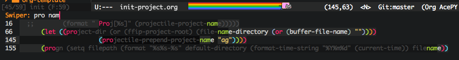
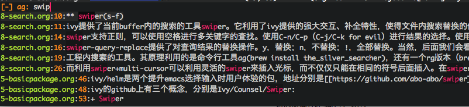
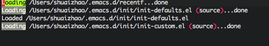
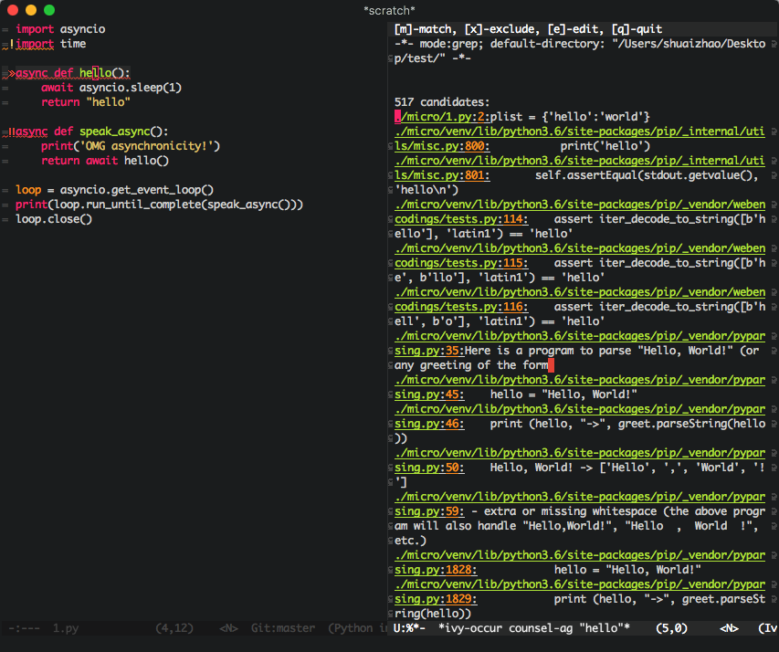
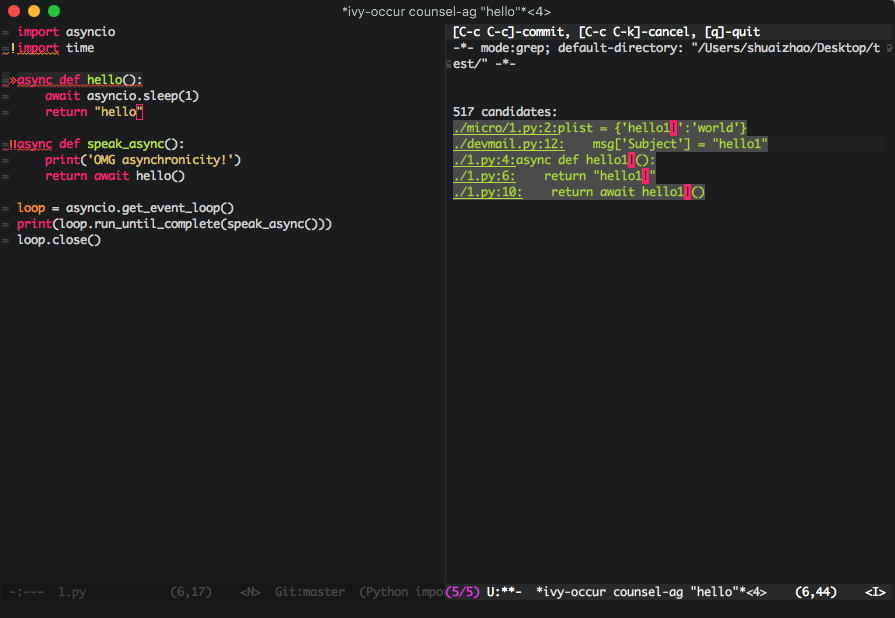

搜索与替换
在当前buffer、多文件、工程内搜索以及替换字符串是程序员的最常用操作之一。本节主要讨论这个话题。(下面以我的快捷键作为示例。)
搜索
isearch (C-s)
emacs原生的搜索工具是isearch，快捷键是C-s，能满足基本的搜索需求。具体参考这里：http://cecs.wright.edu/~pmateti/Courses/333/Notes/emacs-search.html
swiper (s-f)
ivy提供了当前buffer内的搜索的工具swiper。它利用了ivy提供的强大交互、补全特性，使得文件内搜索替换的体验极大提升；并且与isearch不同的是，它会在minibuffer里展示当前文件中所有匹配的字段，而不仅仅是在原文件内高亮。

swiper支持正则，可以使用空格进行多关键字的查找。使用C-n/C-p（C-j/C-k for evil）进行结果的选择。使用evil的话，n与p分别为上一个、下一个匹配。C-r为历史搜索。
swiper-query-replace提供了对查询结果的替换操作。y，替换；n，不替换；!，全部替换。当然，后面我们会看到，替换操作最好的并不是这一种方式。
avy (s-g)
avy提供了文件内跳转的功能。
counsel-ag (s-F)
工程内搜索的工具。其原理利用的是命令行工具ag(brew install the_silver_searcher)，还有一个rg版本（brew install ripgrep）。而counsel、projectile都有一个实现，总之选一个就好。与swiper类似，只是范围变成了多文件。

编辑
multiple-cursor (s-m)
除了multiple cursor，还有一个iedit也可以同时编辑多处文本。所谓multiple cursor，即多光标，以某种条件在当前buffer中插入多个光标。这样当按下键盘上的按键时，多个光标就会同时操作，也就是实现了替换操作，并且强大的多。
多光标的默认操作是在多个同样的符号后同时插入一个光标：

而利用swiper+multi-cursor可以利用灵活的swiper来插入光标，而不仅仅只能在相同的符号后面插入。在swiper搜索的时候执行swiper-mc（默认快捷键C-7，我喜欢用s-m）就会插入光标。
ivy-occur (s-o) + winnow + wgrep
ivy-occur提供了将ivy minibuffer中的数据转移到一个新建的ivy-occur buffer中的功能；winnow提供了对compilation-mode（ivy-occur-mode继承于compilation mode）中的行进行match/exclude的功能，可以对结果进行二次筛选；wgrep提供了对于wgrep-mode（也继承于compilation-mode）的编辑操作能力，并且将编辑结果应用到源文件中去。这三个工具合到一起，就提供了对于搜索结果编辑的强大能力。
- swiper/counsle-ag
通过这两个指令过滤出搜索结果。 - 执行ivy-occur将结果移到新的buffer中：
 - 利用winnow-match-lines(m)与winnow-exclude-lines(x)对搜索结果进行过滤。然后调用ivy-wgrep-change-to-wgrep-mode(e)对结果进行编辑：
 - 编辑完成后，如果确认要把编辑结果应用到各个文件中，那么就调用wgrep-finish-edit(C-c C-c)，如果要丢弃编辑结果，调用wgrep-abort-changes(C-c C-k)。